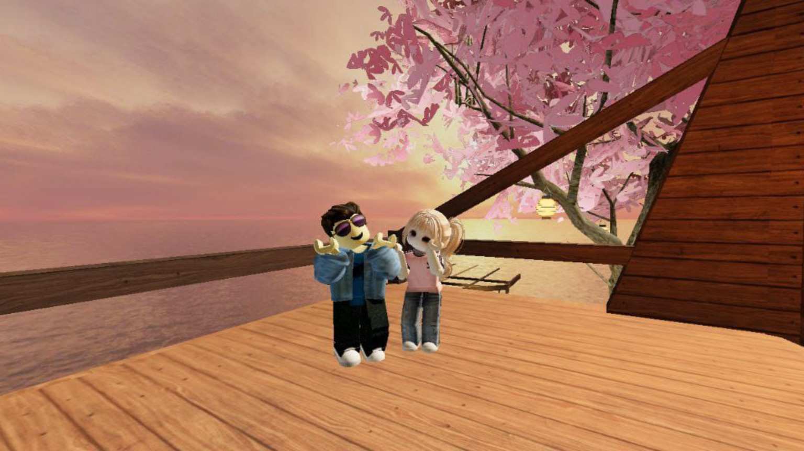
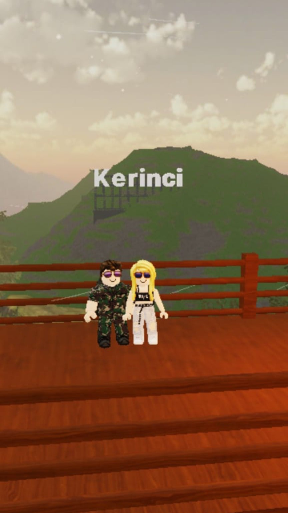
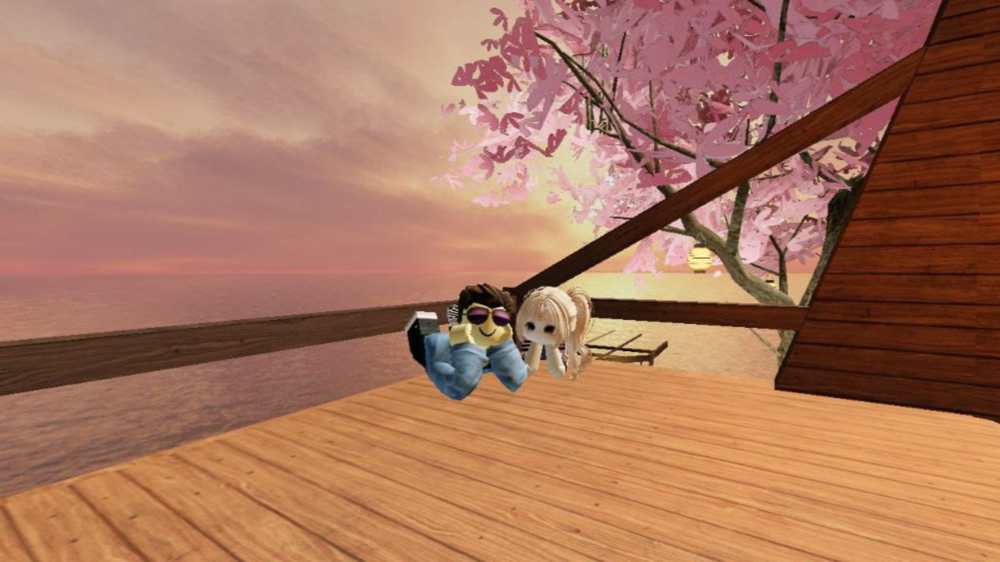
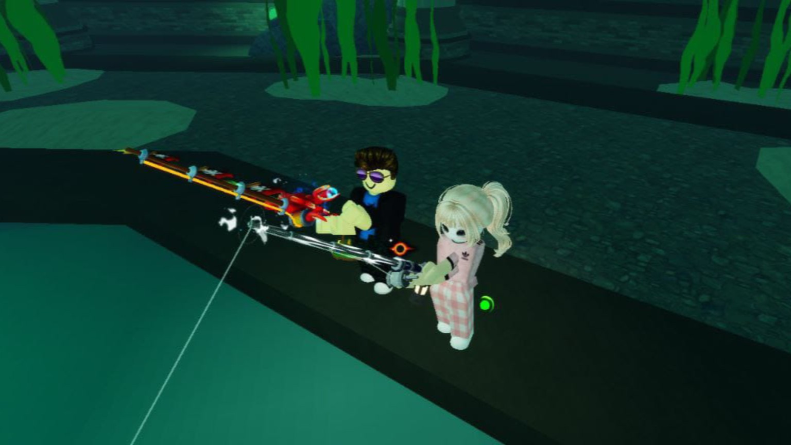

Selamat Ulang Tahun
Yasmintul
Hari di mana semesta menghadirkan laki-laki hebat yang mewarnai duniaku.
Menuju Ulang Tahun Berikutnya
Potret Virtual Kita
Meski hanya dari layar, kebersamaan kita selalu terasa nyata.

Masih inget nggak awal mula kita mabar? Dari yang awalnya cuma iseng main Roblox bareng, eh malah jadi candu.

Karakter kotak-kotak kita ini saksinya. Semoga nanti nggak cuma avatar kita aja yang deketan, tapi orang aslinya juga ya.

Kapan-kapan kita jalan-jalan di dunia nyata ya cowokku. Bukan cuma muter-muter di server ini aja.

Cowok nyebelin yang suka banget isengin aku di game, tapi selalu sukses bikin aku kangen tiap hari.

Biar jarak kita jauh, tapi tiap kali kita online dan main bareng, hariku langsung terasa sempurna banget.
Jejak Waktu
Bagaimana semesta menyatukan dua pemain dalam satu server.
🎮 The Story of Us
Semuanya berawal dari sebuah server game. Sapaan singkat yang tanpa kita sadari akhirnya merubah seluruh duniaku.
💌 The First Message
Dari obrolan game berlanjut ke chat pribadi. Awalnya mungkin canggung, tapi ternyata kita nyambung banget.
💬 Our First Conversation
Mulai sering ngobrol panjang lebar. Ngomongin hal random dari A sampai Z yang entah kenapa nggak pernah ada bosennya kalau sama kamu.
📱 The Night We Stayed Up Together
Rela nahan ngantuk demi main bareng kamu. Padahal mata udah mau nutup, tapi denger suaramu aja udah bikin aku betah begadang.
😂 Our Endless Laughter
Momen konyol pas karakter kita nge-bug atau pas kamu sengaja nge-troll aku. Ketawamu itu selalu berhasil bikin aku senyum-senyum sendiri.
🌙 Late Night Calls
Malam-malam panjang yang cuma diisi suara kita berdua. Suaramu itu beneran jadi penenang dan candu paling hebat buatku.
❤️ The Day I Realized I Love You
Momen di mana aku sadar, aku udah jatuh cinta terlalu dalam sama laki-laki hebat di balik layar ini.
✈️ One Day We'll Meet
Jarak emang masih jadi musuh utama kita. Tapi aku yakin, pertemuan pertama kita nanti bakal nebus semua rasa rindu ini.
Doa dan Harapan
Bait-bait permohonan yang selalu kurapalkan untuk jagoanku.
Selamat ulang tahun, Yasmintul... laki-laki terhebatku.
Di usiamu yang baru ini, sejujurnya harapanku cuma satu: aku pengen lihat kamu selalu bahagia. Aku berdoa semoga senyum yang selalu aku denger dari balik mic itu, nggak pernah hilang dimakan kerasnya dunia.
Semoga Tuhan selalu memberikanmu kesehatan yang melimpah, melindungi setiap langkahmu, dan ngasih kelancaran buat semua hal baik yang lagi kamu usahain sekarang. Semoga kamu selalu dikelilingi hal-hal positif.
Aku tahu sayang, hidup kadang suka berat dan bikin capek. Kalau nanti kamu lagi ada di titik terendah, lagi pusing, atau ngerasa pengen nyerah, tolong inget ya kalau kamu nggak pernah sendirian. Walaupun ragaku jauh dari jangkauanmu, telingaku selalu siap dengerin semua keluh kesahmu.
Semoga kamu semakin percaya diri dan sadar betapa berharganya dirimu. Kamu itu laki-laki hebat, kuat, dan kebanggaan aku. Jangan pernah ngerasa kurang ya.
Dan dari sekian banyak doa baik untukmu, ada satu doa yang selalu aku semogakan tiap hari. Aku berdoa semoga jarak dan waktu bisa segera berbaik hati sama kita. Semoga semesta secepatnya ngizinin kita buat ngerayain ulang tahunmu secara langsung, duduk berdua tanpa ada layar yang menghalangi.
Semoga kebaikan selalu menyertaimu ya, cowokku. Teruslah jadi Yasmintul yang aku kenal, kesayangannya Reica.
Surat Untukmu
Semua yang tak bisa terucap, kutuliskan khusus untukmu.
Hai Yasmintul...
Kadang aku suka mikir sendirian, kok bisa ya? Kok bisa aku ngerasa sayang dan sepeduli ini sama cowok yang awalnya cuma kukenal dari game virtual? Seseorang yang awalnya cuma kebetulan mabar bareng di Roblox, sekarang malah jadi alasan utamaku buat semangat menjalani hari.
Hubungan kita ini unik. Kita nggak bisa tiba-tiba janjian pergi nonton, nggak bisa tiba-tiba mampir bawain makanan pas lagi sedih, apalagi pegangan tangan. Semua rindu cuma bisa dititipin lewat chat, call, dan main bareng di map favorit kita.
Tapi anehnya, justru karena hal itu aku jadi sadar betapa tulusnya perasaan ini. Aku mencintaimu bukan karena hal-hal fisik, melainkan karena caramu berbicara, caramu memperlakukanku, dan suaramu yang selalu ngasih ketenangan luar biasa buatku.
Terima kasih ya sayang udah mau bertahan. Menjalani hubungan LDR yang cuma modal layar dan kepercayaan itu pasti nggak gampang. Sering miskomunikasi, overthinking, atau capek nahan rindu. Tapi makasih banget kamu nggak pernah nyerah sama hubungan kita.
Kamu harus tahu kalau setiap denger notif darimu, hatiku selalu ikutan seneng. Dengerin kamu cerita tentang harimu, dengerin kamu ketawa, itu udah jadi bagian paling aku tunggu setiap harinya.
Maaf ya kalau selama ini aku belum bisa jadi pacar yang sempurna. Belum bisa ada di sampingmu pas kamu butuh senderan fisik. Tapi aku janji, aku bakal selalu doain yang terbaik buat kita. Aku bakal terus nunggu sampai hari di mana kita beneran bisa ketemu dan tatap-tatapan langsung.
Di hari spesialmu ini, aku berharap kamu bisa ngerasain sebesar apa rasa sayangku, meskipun perayaannya cuma lewat website ini. Simpan pesan ini ya, baca lagi kalau suatu saat nanti kamu ngerasa sedih atau sendirian.
Selamat bertambah usia, laki-laki hebatku. Tunggu aku ya, nanti kita pasti ketemu.
Sangat amat menyayangimu,
Reica
Waktunya Merayakan
Geser layarnya untuk memutar kue. Tiup lilinnya dan buatlah satu permohonan dalam hati.
Kado Terakhir
Sebuah kejutan kecil yang aku siapkan khusus untuk cowokku.